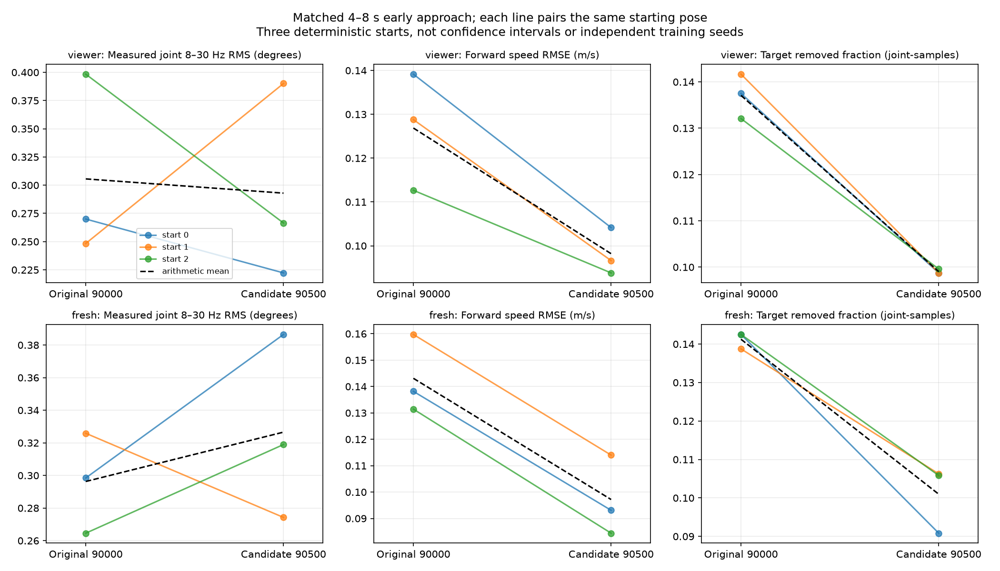

Original 90000 vs combined candidate 90500, identical scripted commands and current target bounds. GPU policy inference; CPU MuJoCo physics. This is fresh data, not a replay of the video or the old audit.
Interpretation/report · CSV comparison · All phase metrics · Tools guide
Viewer = existing observation timing. Fresh = refresh sensors on a copy before constructing each policy observation. This is an isolated sensitivity test; it does not establish hardware accuracy.
HF columns use the fixed 4–8 simulation-second window. Q: mean per-joint 8–30 Hz RMS (degrees), sampled at 200 Hz. Target: 8–20 Hz RMS, sampled at 50 Hz. Different bands are not an equal-band amplitude comparison. Lower oscillation alone is not success.
| Run / plots | Outcome | First stair contact (s) | Max base x (m) | Max tilt (deg) | Q HF (deg) | Target HF (deg) | Target removed fraction | Torque clipped fraction | vx RMSE (m/s) |
|---|---|---|---|---|---|---|---|---|---|
| original90000_stairs_viewer_start0 | lane_exit | 11.375 | 0.192 | 26.840 | 0.270 | 0.844 | 0.138 | 0.000 | 0.139 |
| original90000_stairs_viewer_start1 | tip | 10.985 | 0.098 | 78.477 | 0.248 | 0.724 | 0.142 | 0.000 | 0.129 |
| original90000_stairs_viewer_start2 | lane_exit | 10.805 | 0.144 | 27.660 | 0.398 | 1.212 | 0.132 | 0.000 | 0.113 |
| original90000_stairs_fresh_start0 | timeout_incomplete | 11.200 | 0.193 | 36.653 | 0.298 | 0.804 | 0.142 | 0.001 | 0.138 |
| original90000_stairs_fresh_start1 | lane_exit | 11.815 | -0.033 | 41.422 | 0.326 | 1.199 | 0.139 | 0.000 | 0.160 |
| original90000_stairs_fresh_start2 | timeout_incomplete | 11.165 | 0.421 | 45.167 | 0.265 | 0.712 | 0.142 | 0.000 | 0.131 |
| candidate90500_stairs_viewer_start0 | lane_exit | 9.730 | 0.058 | 32.611 | 0.222 | 0.728 | 0.099 | 0.000 | 0.104 |
| candidate90500_stairs_viewer_start1 | tip | 9.455 | 0.187 | 91.308 | 0.390 | 1.208 | 0.099 | 0.001 | 0.097 |
| candidate90500_stairs_viewer_start2 | lane_exit | 9.125 | 0.113 | 37.081 | 0.267 | 0.744 | 0.100 | 0.001 | 0.094 |
| candidate90500_stairs_fresh_start0 | timeout_incomplete | 9.475 | 0.216 | 39.145 | 0.386 | 1.024 | 0.091 | 0.000 | 0.093 |
| candidate90500_stairs_fresh_start1 | lane_exit | 10.325 | -0.035 | 29.226 | 0.274 | 0.843 | 0.106 | 0.000 | 0.114 |
| candidate90500_stairs_fresh_start2 | timeout_incomplete | 9.430 | 0.196 | 40.278 | 0.319 | 1.000 | 0.106 | 0.000 | 0.084 |
Outcomes include falls, lane exits and timeouts. Completed execution means the experiment was recorded, not that stairs were climbed. These initial runs are deterministic cases, not a success-rate estimate. Plot panels use full run or contact-aligned windows as labelled.
